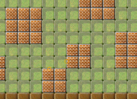
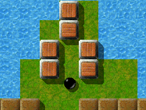

Level of the MonthEach month, we take a closer look at excellent Enigma levels. Excellent levels are those with the highest average user ratings and the greatest number of ratings altogether. Thus it is your vote that determines the Level of the Month. So please rate the levels you play and do not forget to submit your ratings together with your scores at the end of each month. You can find all previous Levels of the Month in our archive. July 2007: “Elaborate” by Jacob ScottNo surprise … Another level by Duffy voted for 'Level of the Month'. Of course, Duffy is one of the greatest level designers for Enigma and his production of spectacular levels looks unstoppable. The level 'Elaborate' is currently on a score of 8.67 with 6 votes, this brings 'Elaborate' to 3rd place in the LotM Archives.

Enigma V # 65
“Just how the level blends into action”Duffy has mixed both action and puzzles in this old massive masterpiece. Of course, most people would look at this level and think mostly of the puzzles, but this level needs a top quality mouse just to pass the fast and slow obstacles. The excitement you receive from this level is over the scale. “You'll never know what is coming up next …” is a phrase this level uses A LOT. “Some Pointers”'As i started this level on my computer and stared in thought I said: 'Where will i go first?'. As you can see this level will take a long time to pass if you look at the records. So I got the cherry, avoiding the super confusing puzzle to the north, and i came to the room with a line of water, underneath which i was unsatisfied to read the message saying 'It is not quite that easy'. Straight after i was killed by [ … ] You will need to wander from room to room to find the right solution. Then there was the puzzle …

One out of many puzzles
Most of the puzzles in this level are simple yet challenging, like the one in the room directly north of the starting point. If you are as dumb witted as me at this level and you want to pass this level … I recommend speaking with 'Stupid' or 'Moneymaker' for they can sure show us how levels are done. The level has an interesting start too: a bunch of question mark blocks surrounding your escape. Not many people quote this in levels but the landscape is well thought out and doesn't look dodgy at all. Written in 2004 it's the third 'classic' by Duffy winning the LotM award, and it is one of the levels with the most rooms. There might be bigger sized levels, “Island Labyrinth” (our first LotM) or “Map it out” for instance, both as well by Duffy, but their number might be low. 'Elaborate' is another one of 'Duffy's Delights' - an engrossing, stimulating level that has a little of everything mixed in. You start out surrounded by question marks - an appropriate metaphor for the way Elaborate works. You explore and learn as the level unfolds little by little. It took me a long while before I realized how I could get through the clear stones in the room below the starting place. It's exactly the kind of enigma that I love to solve. You're on a journey to a new and interesting landscape - the elements are familiar, but they are presented in novel ways. You have to go to the ends of the earth to find the tools you need before you can open the Oxyds. You need to plan and to remember - to be deliberate at times, and at others, quick and agile. And be careful not to fall in the water, because once you drown, you drown. To me 'Elaborate' was love at second sightTo me 'Elaborate' was love at second sight. On my first visit to 'Elaborate' i spent a lot of marbles to the question mark stones (or rather to some of their mutations) in the starting room before finally gaining admission to the second room. There the encounter with a rotor should have been my last experience with 'Elaborate' for several months. I placed it to category 'Action-Level' class 'Bad Nightmare' and decided not to elaborate on it any further. But when revisiting 'Elaborate' not so long ago, i soon found out i had been wrong! And HOW wrong i've been!! Never had i misjudged a level so much as 'Elaborate'! This killing rotor really ain't that fast and easily can be tricked, and even this rapid moving creature at the bricked hall turns out to be more a playmate than a deadly enemy. But these two parts of action are exceptional, and my general impression of 'Elaborate' has become that of a place of contemplation and tranquility. All in all i had the feeling like walking in an arts gallery. Each of the countless rooms presents unique objects or tasks on the background of various sceneries. One has to move very carefully, especially when changing rooms. Concerning this one quite grotesque situation occurs to me: if one moves carelessly fast from a certain room to another and if a certain item is in one's possession, then one gets 'lost in space' - because of increased friction of its nothingness. The mere thought of it still makes me laugh! Though none of the occurring problems can be called difficult by its own, the word 'It's not as easy as it seems' (a quotation from a note you find at a certain place) can be applied to 'Elaborate' as a whole. And one can't be sure if he's really been to all rooms until finally the 'level finished' message appears! 'Elaborate' truly has deserved the honor of becoming 'Level of the month'! Hats off (again) to Jacob Scott! A few words by the author himself'Elaborate' was one of my more-recent attempts at a new style of level. Instead of the usual labyrinth with small passageways and occasional larger elements, everything in 'Elaborate' is easily partitioned off into separate rooms. However, this does not mean that each section is independent indeed, I think much of the fun comes from figuring out what to or where to go next. Items or other objects in one room must often be brought to others, removing any sort of linearity from the level. Also, I intended the different stone/floor schemes add to the variety of this level and set the tones for the different sections, each with its own unique structure and design. I also attempted to create a level that included many different varieties of puzzles and objects. None are particularly difficult, but overall give a sense of exploration and interconnectedness. 'Elaborate' is also one of the few (practically only) levels that include 'surprise' stones and items (conveniently concealed -- try the room left and down of the start, or a certain harder-to-access location). Usually 'surprise' objects' inherent randomness makes them very difficult to place without allowing for shortcuts, but as none of the regions in 'Elaborate' is too complex and all rely on many different objects, I could include these frequently-forgotten components without worrying about any 'shortcut' bypassing too much. These hidden treasures, I believe, just add to the level's sense of nonlinearity and freedom to adventure. Looking back on this level I still find it enjoyable to play, albeit relatively easy, but I hope that is simply because I am familiar with all its tricks (and secrets). I see 'Elaborate' as an experiment, hopefully successful, in a different type of level, with less emphasis on small yet unforgiving challenges and more on large-scale exploration and discovery. I designed nothing in the level to be particularly formidable individually, but as a whole all the elements should come together to make a very accessible yet nevertheless somewhat taxing level. There are surely multiple ways to progress through 'Elaborate' (which makes world record-hunting much more interesting), creating a more open-ended and intra dependent landscape that still maintains a reasonable level of difficulty and a diverse set of challenges for one to enjoy. I still can't believe that Duffy has made over 150 Levels. Thats a whole
level set and a half. His levels have inspired me to create the puzzling
levels I like to make. Greets, |